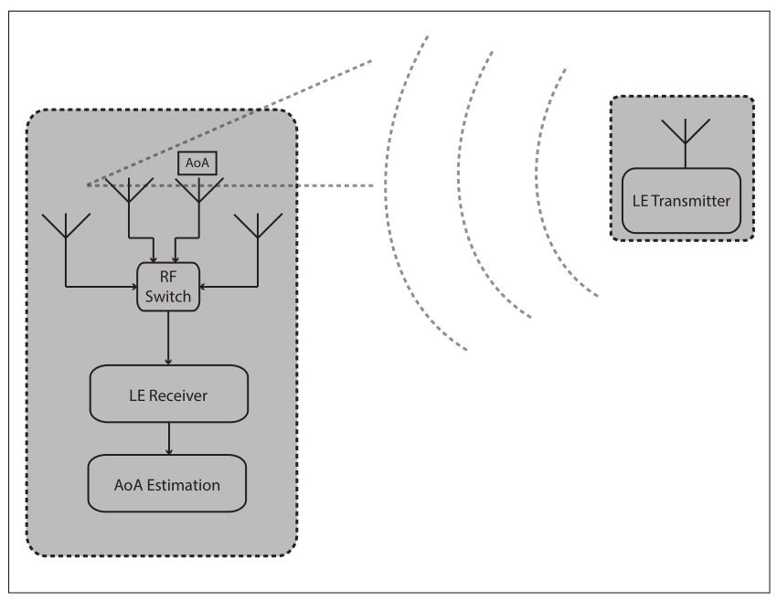
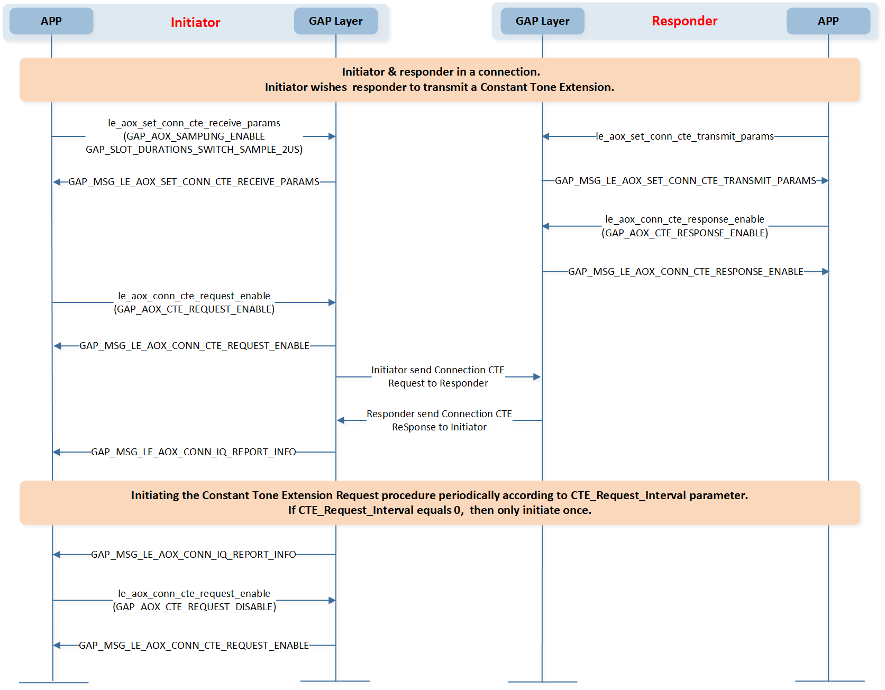
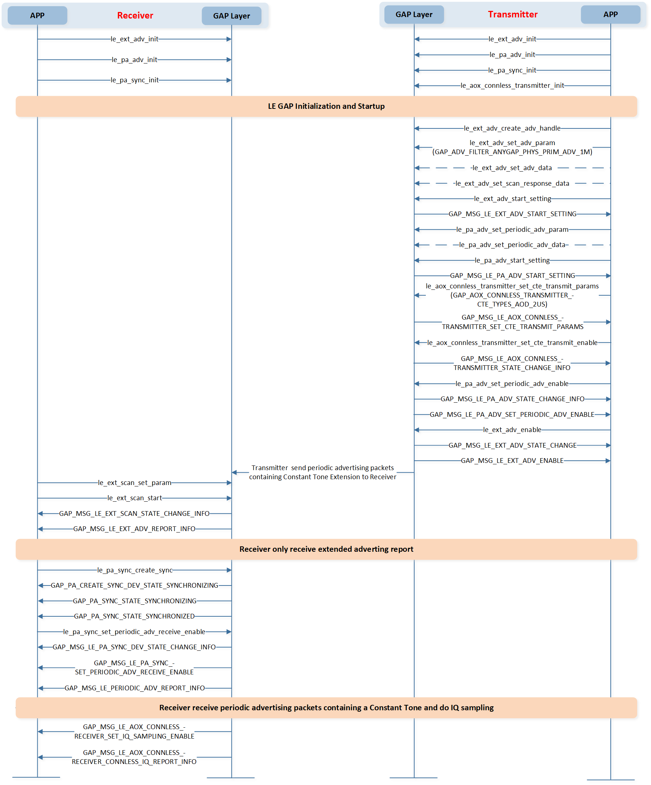

LE Direction Finding
本文旨在概述定位方法，以帮助产品使用 AoA/AoD 开发。
AoA/AoD 代表两种不同的定位方法，APP可根据实际需要进行选择。更多信息可参见章节 到达角度 (AoA) 定位方法 和 出发角度 (AoD) 定位方法 。
如果支持多天线且APP需要切换天线，开发者可以参考章节 天线切换 获取更多信息。
AoA/AoD 可以支持两种场景，更多信息可参见章节 面向连接场景的AoA/AoD 和 无连接场景中的AoA/AoD。
LE设备通过发送带有方向信息（开启了方向查找）的报文，可以将定位需要的方向信息告知对端设备。 使用来自多个发射器的方向信息和提供其位置的“profile-level”信息， LE 无线电设备可以计算其自身 的位置。
此功能支持LE非编码PHY，但不支持LE编码 PHY。
术语与概念
到达角度 (AoA) 定位方法
LE设备可以使用单天线，通过传输启用了方向查找的报文，将定位需要的方向信息告知对端设备。
对端设备由 RF 开关和天线阵列组成，在接收这些报文时切换天线，并捕获 IQ样本。 IQ 样本可用于计算使用天线阵列中不同元件接收到的无线电信号的相位差， 从而用于估算到达角度 (AoA)。
{kind=link}

到达角度定位方法
出发角度 (AoD) 定位方法
由RF开关和天线阵列组成的设备可以通过传输启用了方向查找的报文，并且在传输过程中切换天线，使对端设备能够检测 其出发角度(AoD)来获取定位信息。
方向的确定基于天线阵列的发射元件和接收单天线之间LE无线信号的不同传播延迟来计算。 这些传播延迟可以通过IQ测量来检测。 任何支持AoD功能的接收LE无线电设备，只要配备单根天线，就能捕获IQ样本，并且在借助于指定发射天线布局的“profile-level”信息的情况下， 计算出入射无线信号的角度。

出发角度定位方法
天线切换
设备可以支持由开关控制的两个或多个天线组成的天线阵列。 设备在接收数据包的“Constant Tone Extension”（到达角度定位方法）或发送数据包的“Constant Tone Extension”（出发角度定位方法）时切换天线。
功能设置
GAP层接口功能
GAP层提供的接口的功能如下：
天线切换： 读取切换速率、采样速率、天线数量以及设备支持的最大“Constant Tone Extension”(CTE)长度。
面向连接场景的AoA/AoD： 在面向连接的场景中发送连接 CTE 请求来启动“Constant Tone Extension Request Procedure”。
无连接场景中的AoA/AoD： 在无连接场景中启动“Connectionless Constant Tone Extension Procedure”。
接口提供
LE方向查找接口可以分为天线切换接口、面向连接场景的AoA/AoD 接口和无连接场景的AoA/AoD 接口。
下表是对天线切换接口的简单描述。天线切换相关的接口定义在 subsys\bluetooth\bt_host\inc\gap_aox.h。
函数名称 |
描述 |
|---|---|
读取天线信息 |
下表是对面向连接场景的AoA/AoD 接口的简单描述。面向连接场景AoA/AoD相关的接口定义在 subsys\bluetooth\bt_host\inc\gap_aox_conn.h。
函数名称 |
描述 |
|---|---|
设置连接CTE接收参数 |
|
设置连接CTE发射参数 |
|
请求Controller开始或停止发起“Constant Tone Extension Request Procedure” |
|
请求Controller响应“Constant Tone Extension”请求 |
下表是对无连接场景的AoA/AoD接口的简单描述。无连接场景AoA/AoD相关的接口定义在 subsys\bluetooth\bt_host\inc\gap_aox_connless_transmitter.h 和 subsys\bluetooth\bt_host\inc\gap_aox_connless_receiver.h。
函数名称 |
描述 |
|---|---|
初始化无连接发射器的advertising sets数目 |
|
请求Controller设置周期性广播中“Constant Tone Extension”的发射参数 |
|
请求Controller启用或禁用在周期性广播中传输“Constant Tone Extension” |
函数名称 |
描述 |
|---|---|
请求Controller启用或禁用从周期性广播序列中的周期性广播包中的“Constant Tone Extension” 中捕获IQ样本 |
功能
GAP消息
GAP LE AoA/AoD回调消息用于在接口被调用后通知APP有关函数的执行情况。
GAP消息在 subsys\bluetooth\bt_host\inc\gap_aox.h 中定义。
与天线切换相关的蓝牙消息如下：
#define GAP_MSG_LE_AOX_READ_ANTENNA_INFORMATION 0x01 //Response msg type for le_aox_read_antenna_information
面向连接的场景中，与AoA/AoD相关的蓝牙消息如下：
#define GAP_MSG_LE_AOX_SET_CONN_CTE_RECEIVE_PARAMS 0x22 //Response msg type for le_aox_set_conn_cte_receive_params
#define GAP_MSG_LE_AOX_CONN_CTE_RESPONSE_ENABLE 0x23 //Response msg type for le_aox_conn_cte_response_enable
#define GAP_MSG_LE_AOX_CONN_CTE_REQUEST_ENABLE 0x24 //Response msg type for le_aox_conn_cte_request_enable
#define GAP_MSG_LE_AOX_CONN_IQ_REPORT_INFO 0x25 //Notification msg type for connection IQ report
#define GAP_MSG_LE_AOX_CTE_REQUEST_FAILED_INFO 0x26 //Notification msg type for failure of CTE request
无连接的场景中，与AoA/AoD相关的蓝牙消息如下：
#define GAP_MSG_LE_AOX_CONNLESS_TRANSMITTER_SET_CTE_TRANSMIT_PARAMS 0x40 //Response msg type for le_aox_connless_transmitter_set_cte_transmit_params
#define GAP_MSG_LE_AOX_CONNLESS_TRANSMITTER_STATE_CHANGE_INFO 0x41 //Connectionless CTE transmitter state change info
#define GAP_MSG_LE_AOX_CONNLESS_RECEIVER_SET_IQ_SAMPLING_ENABLE 0x50 //Response msg type for le_aox_connless_receiver_set_iq_sampling_enable
#define GAP_MSG_LE_AOX_CONNLESS_RECEIVER_CONNLESS_IQ_REPORT_INFO 0x51 //Notification msg type for LE connectionless IQ report info
面向连接场景的AoA/AoD
面向连接场景中AoA/AoD所需功能
在面向连接的AoA/AoD场景中，发起者和响应者应支持以下功能：
发起者角色所需功能
连接CTE请求
支持接收“Constant Tone Extension”功能。
支持扩展拒绝指示功能。
所有支持“Constant Tone Extension”的PHYs支持以下功能。
LL_CTE_REQ
LL_CTE_RSP
“Constant Tone Extension Request Procedure”
响应者角色所需功能
连接CTE响应
支持扩展拒绝指示功能。
所有支持“Constant Tone Extension”的PHYs支持以下功能。
LL_CTE_REQ
LL_CTE_RSP
传输“Constant Tone Extension”
“Constant Tone Extension Request Procedure”
需要的蓝牙特性
以下功能在 bin\rtl87x2x\bt_host_image\bt_host_x_x\bt_host_config.h 中定义。
F_BT_LE_5_1_SUPPORT
F_BT_LE_5_1_AOA_AOD_SUPPORT
F_BT_LE_5_1_AOX_CONN_SUPPORT
在面向连接的场景中，能够使用AoA/AoD的设备可以通过发送连接CTE请求来启动“Constant Tone Extension Request Procedure”。
Constant Tone Extension Request Procedure
启动和停止“Constant Tone Extension Request Procedure”如下图所示：
{kind=link}

启动和停止“Constant Tone Extension Request Procedure”
无连接场景中的AoA/AoD
无连接场景中AoA/AoD所需功能
在无连接的AoA/AoD场景中，发射器和接收器应支持以下功能：
无连接CTE发射器
无连接CTE发射器
广播状态下支持LE周期广播功能。
所有支持“Constant Tone Extension”的PHYs支持以下功能。
传输“Constant Tone Extension”
无连接CTE接收器
无连接CTE接收器
同步状态下支持LE周期广播功能。
所有支持“Constant Tone Extension”的PHYs支持以下功能。
接收扩展头中包含CTEInfo字段的广播物理信道PDUs
IQ采样
需要的蓝牙特性
定义在 bin\rtl87x2x\bt_host_image\bt_host_x_x\bt_host_config.h 中的以下功能需要启用。
发射器角色所需功能
F_BT_LE_5_1_SUPPORT
F_BT_LE_5_1_AOA_AOD_SUPPORT
F_BT_LE_5_1_AOX_CONNLESS_SUPPORT
F_BT_LE_5_0_SUPPORT
F_BT_LE_5_0_PA_SUPPORT
F_BT_LE_5_0_PA_ADV_SUPPORT
F_BT_LE_5_0_AE_ADV_SUPPORT
接收器角色所需功能
F_BT_LE_5_1_SUPPORT
F_BT_LE_5_1_AOA_AOD_SUPPORT
F_BT_LE_5_1_AOX_CONNLESS_SUPPORT
F_BT_LE_5_0_SUPPORT
F_BT_LE_5_0_PA_SUPPORT
F_BT_LE_5_0_PA_SYNC_SUPPORT
F_BT_LE_5_0_AE_SCAN_SUPPORT
能够在无连接场景中使用AoA/AoD的设备应能够启动“Connectionless Constant Tone Extension Procedure”。
Connectionless Constant Tone Extension Procedure
发送和接收“Connectionless Constant Tone Extension Procedure”如下图所示：
{kind=link}

发送和接收“Connectionless Constant Tone Extension Procedure”